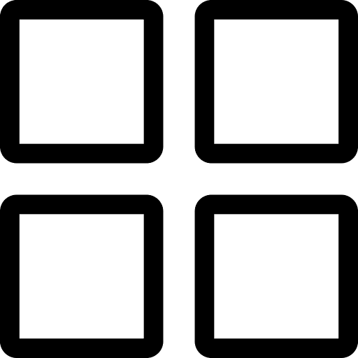
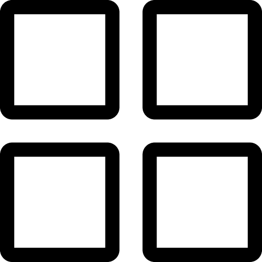
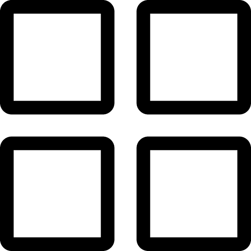
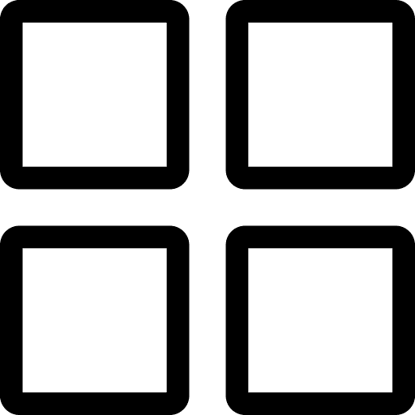

I consider myself a very passionate person, when something catches my interest, I won’t let go until I know how and why it works.
Talk about my childhood and how I wanted to learn how everything works. And that lead me to nanothechnology, which is an amazing field but I didn't enjoy how for now, in my country is only for scolars. That I like more on hands experience, somehting during my studies I got when I learned Matlab and loved how programming was made to create things from the bottoms upp just lke nanothechnolgy. This page, will also include me previous job experiences, study and why I switched from nanotchnology tu software engineering.
“Aspire not to have more, but to be more.”
~ Oscar Romero